실습3. Greengrass Group 생성 및 초기 설정 (25분)
AWS Cloud에 Greengrass Group과 Core 생성
AWS Greengrass console로 이동한 후, Greengrass 메뉴를 클릭합니다. 새로운 Greengrass Group을 생성하기 위하여, 화면과 같이 Create a Group를 클릭합니다.

Greengrass가 Lambda와 같은 다른 AWS Service에 잡근하기 위한 권한 부여에 대한 동의가 필요합니다. Grant permission 버튼을 클릭하여 권한 부여에 동의하시면 Greengrass_ServiceRole과 같은 이름의 Service Role이 생성되며, 작업에 필요한 역할(role)이 Service Role에 추가됩니다.
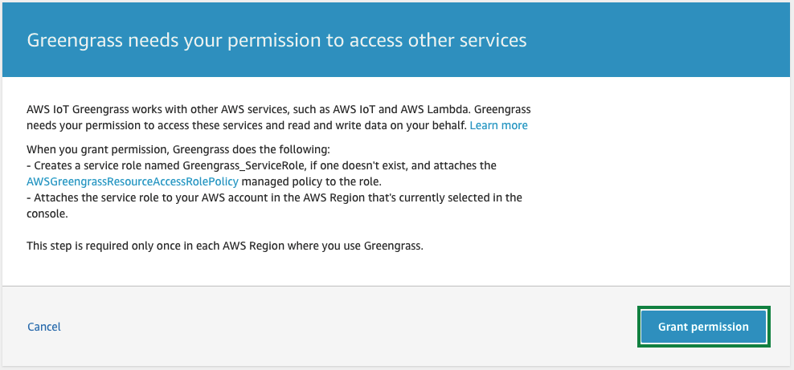
Greengrass group을 셋업합니다. 여기서는 Use easy creation을 클릭합니다.

생성할 Greengrass group의 이름을 지정합니다. 여기서는 greengrass-ml를 사용합니다. Next를 클릭하여, 다음 단계로 진행합니다.
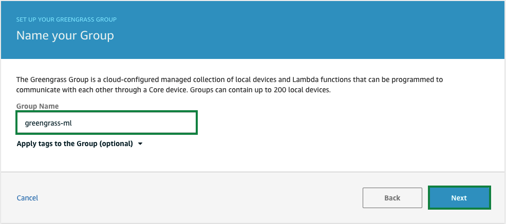
Greengrass Core를 생성합니다. 앞서 지정한 이름을 기반으로 greengrass-ml_Core 라는 이름이 자동 생성됩니다. Next를 클릭하여, 다음 단계로 진행합니다.
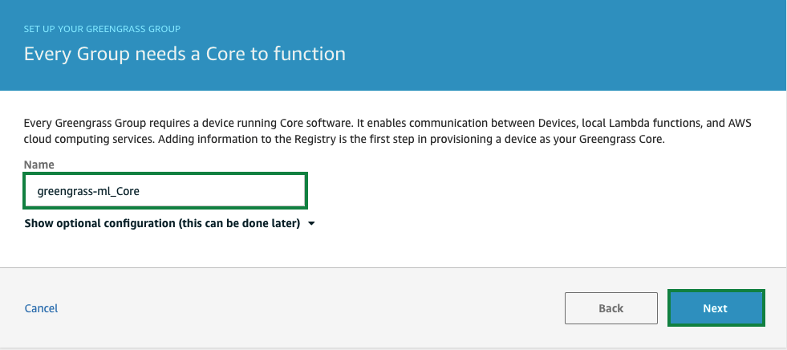
‘Run a scripted easy Group creation’ 단계를 통하여, 나머지 단계를 진행합니다. Create Group and Core를 클릭합니다.
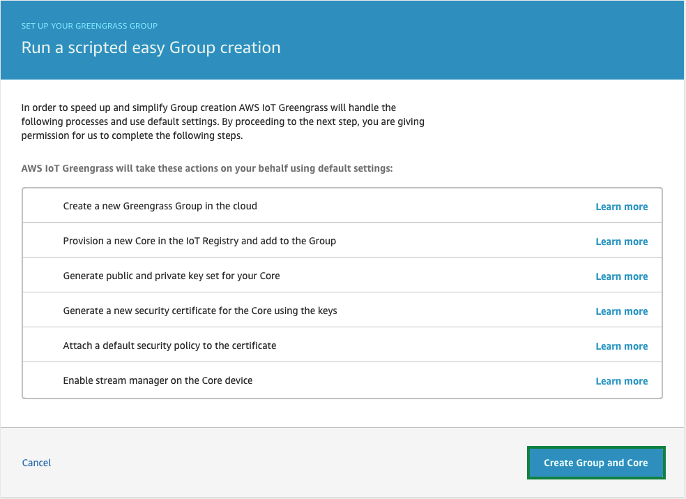
Download these resources as a tar.gz를 클릭하여, device를 cloud에 연결하기 위하여 필요한 public key, private key와 certificate를 다운로드 받습니다. 반드시, Finish를 클릭하여 Greengrass group과 core를 생성합니다.
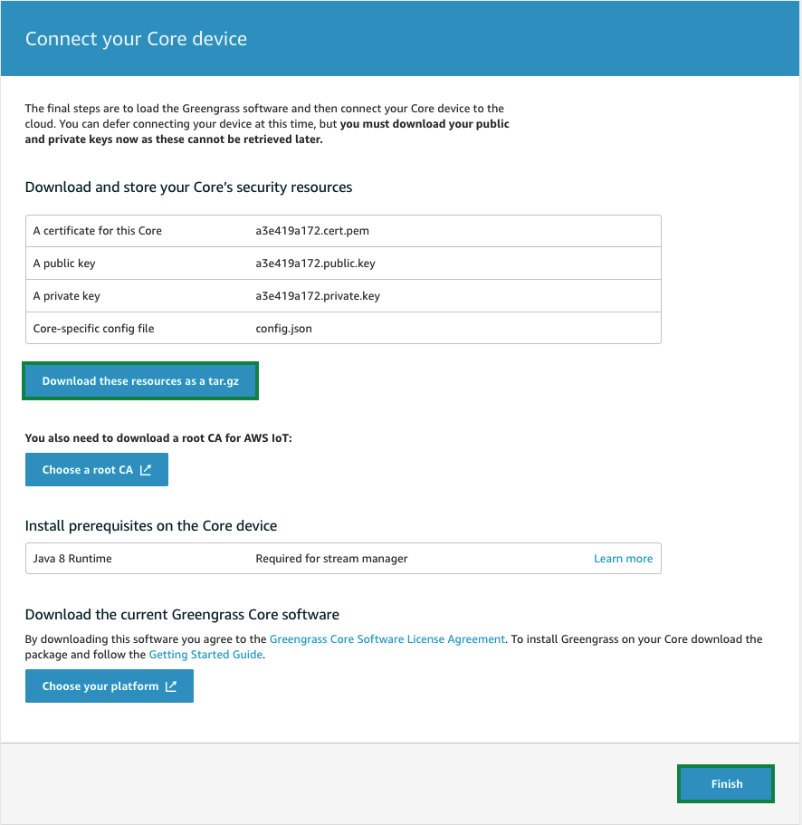
Create a Greengrass Service Role
IAM console로 이동합니다. 좌측 메뉴에서 Roles를 클릭합니다. 그리고, Create role 버튼을 클릭합니다.
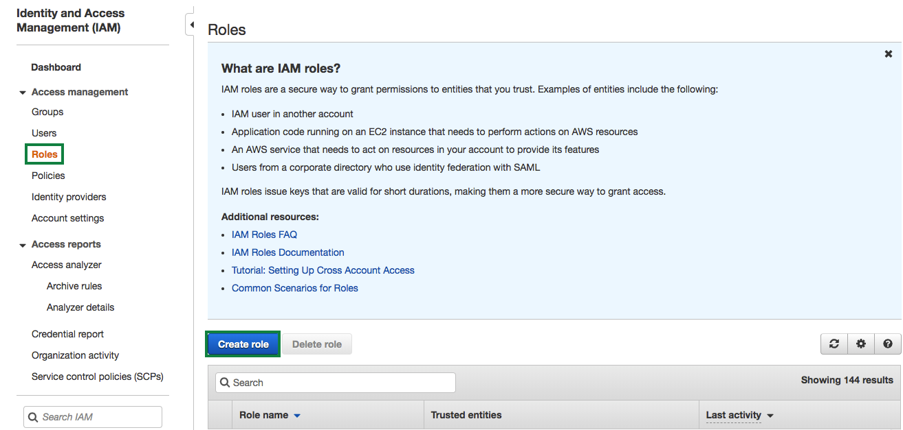
Select type of trusted entity에서 AWS service를 선택하고, Choose the service that will use this role에서 Greengrass를 선택합니다. 그리고, Next: Permission를 클릭합니다.
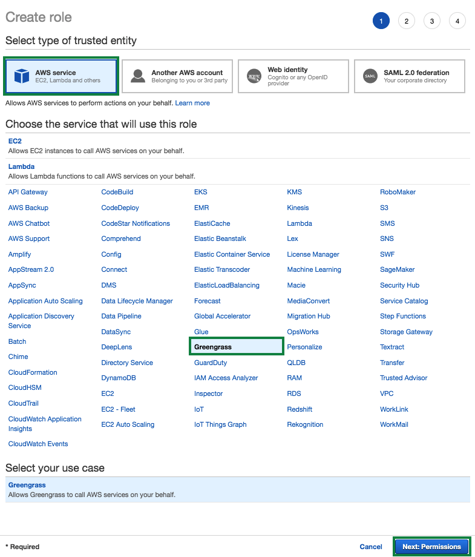
Attche permissions policies에서 AWSGreengrassResourceAccessRolePolicy를 선택합니다 (탐색 창에서 검색합니다). 그리고, Next: Tags를 클릭합니다.
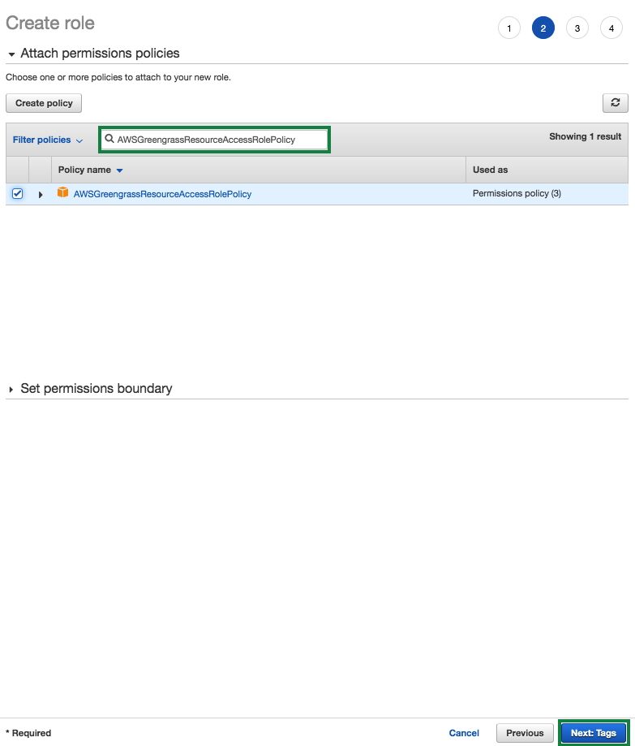
Add tags (optional)를 통하여 tag를 추가할 수 있습니다. Next: Review를 클릭합니다.
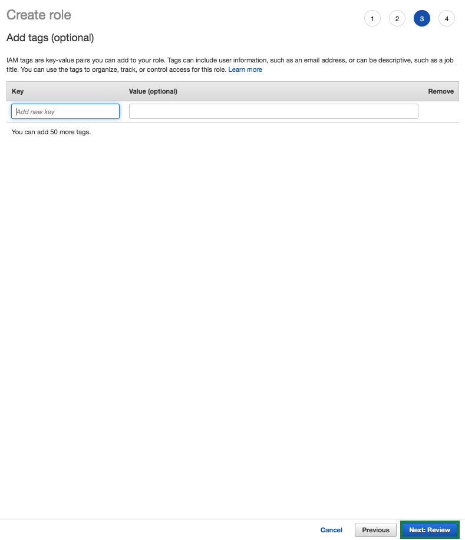
Role name에 GreengrassRole 을 입력하고, Create Role을 클릭합니다.
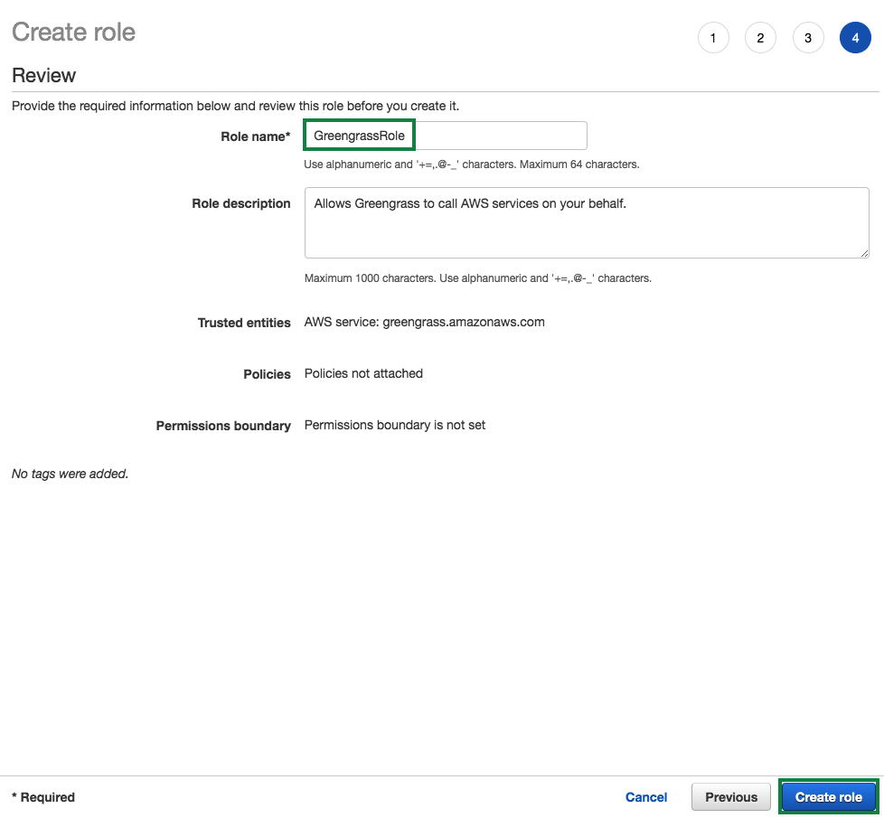
IAM Role을 생성한 후 역할 ARN을 기록하고이를 사용하여 awscli 명령을 작성하십시오. IAM 콘솔에서 역할 arn을 찾을 수 있습니다.
Role 메뉴의 검색 창에 위에서 생성한 GreengrassRole을 입력합니다.
GreengrassRole을 클릭합니다.
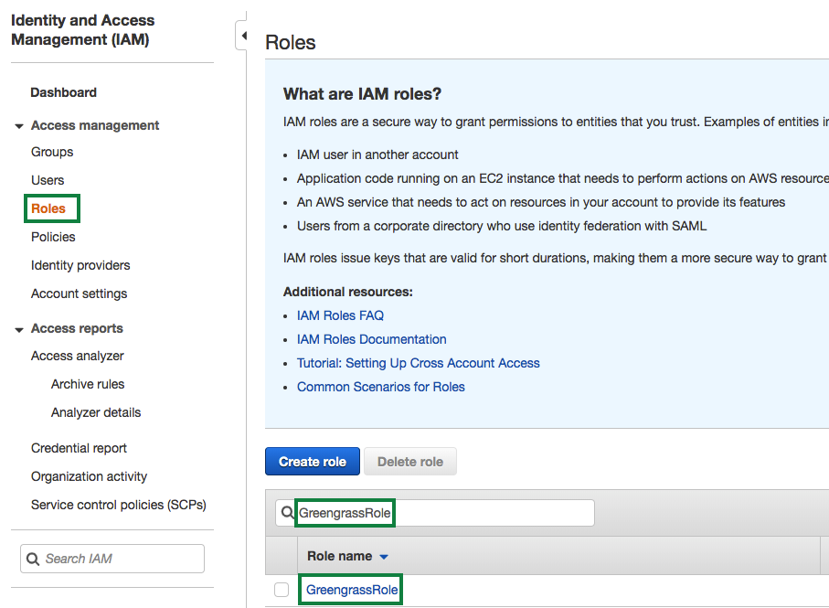
화면 상단에서 role arn을 찾을 수 있습니다.
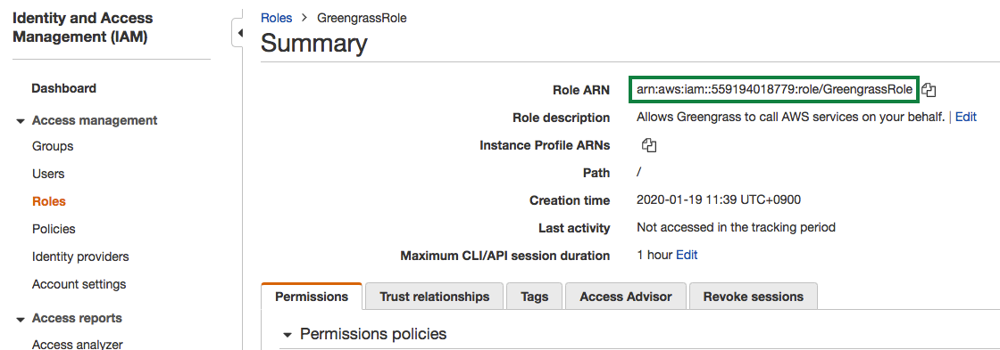
Cloud9 터미널(terminal)에서 하기와 같은 명령으로 service role과 계정(account)을 연결합니다:
aws greengrass associate-service-role-to-account --role-arn arn:aws:iam::<YOUR_AWS_ACCOUNT_ID>:role/GreengrassRole
아래는 예제입니다.
aws greengrass associate-service-role-to-account –role-arn arn:aws:iam::576184218696:role/GreengrassRole
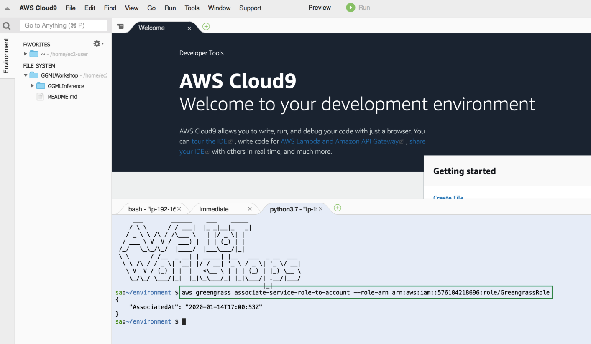